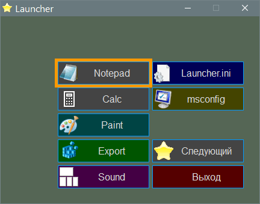
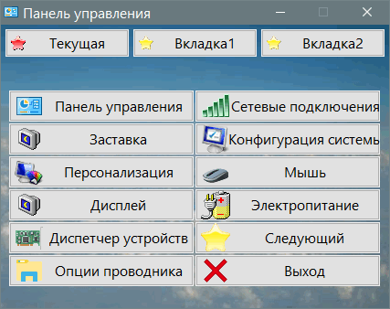
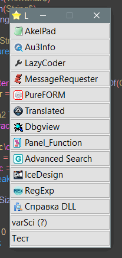

Launcher
Назначение
Оболочка для запуска программ.
Лаунчер с дополнительной поддержкой цвета кнопок (фон, кайма, шрифт).

Лаунчер с дополнительной поддержкой координат кнопок.

LauncherCL с передачей ком-строки, удобен для редактора или пункта меню. Если необходимо передать файл одной из запускаемых программ.

Взаимосвязанные
LauncherCLE
Launcher (устаревшая версия).
Работа с программой
Кратко: сформировать ini-файл.
Создание
Все кнопки задаются в ini-файле
Параметры ini-файла
[gui]
Title=Launcher - Заголовок окна
icon=launcher.ico - иконка окна
FormX=10 - x-координата окна, если не указаны обе координаты, то по центру
FormY=10 - y-координата окна, если не указаны обе координаты, то по центру
FormWidth=430 - Ширина окна
FormHeight=310 - Высота окна
FormStyle=2156396544 - стиль окна, обычно заголовка. 13107200 - без кнопки "Свернуть", 13107204 - узкий заголовок - панель инструментов, 2156396544 - без заголовка
Picture = Launcher.bmp - картинка
GuiBkColor=3F3F3F - Цвет фона если картинка не найдена
AreaX=90 - x-координата заданной области для кнопок
AreaY=70 - y-координата области
AreaWidth=320 - ширина области
AreaHeight=220 - высота области
Margin=5 - промежутки между кнопок
Columns=2 - число колонок, вертикальных рядов
FontName=Consolas - название шрифта
FontSize=14 - размер шрифта
FontStyle=256 - стиль шрифта
LargeIcon = 1 - Размер иконки, если 1 то 32, если 0, то 16
BtnAlign=256 - Выравнивание текста на кнопке (по умолчанию по центру, 256 - слева, 512 - справа, 8192 - многостроковый, 1 - выбранная). Для многострокового тильда "~" используется в качестве переноса строки и заменяется на CRLF.
BtnMinW= - минимальная ширина кнопки
BtnMinH= - минимальная высота кнопки
BtnColor= - пока не используется (цвет кнопки)
Wow64=1 - отключает перенаправление в SysWOW64 для 32-битной программы на ОС x64
Esc=1 - добавляет хоткей Esc для закрытия программы.
TipStyle=1 - задаёт стиль всплывающей подсказки. Может быть суммой флагов 1, 2, 64, где 1 - включает заголовок и иконку, 2 - показывает exe и arg, 64 - мультяшный вид подсказки.
TipWidth=220 - ширина всплывающей подсказки.
TipTime=15 - время отображения всплывающей подсказки.
CRLF=~ - символ переноса используемый в параметрах warntext, hint, в названии кнопки при включенном флаге "многострочный текст". Например "warntext=текст~подсказки" будет 2 строки.
TestSize=0 - отключает проверку, при которой окно уменьшается под размер экрана если оно больше экрана. Возможно этот параметр будет удалён.
; Параметры для дополнительной версии
PicResize = 1 - принудительное масштабирование картинки (0 - без маштабир., 1 - принудительное по DPI, 2 - принудительное всегда, 3 - только если размер окна и картинки не совпадают)
LargeIcon2 = 1 - тоже что LargeIcon, но для кнопок с координатами
BorderW=2 - толщина линии активного элемента. 0 - отключает функционал рисования рамки
BorderColor=FF9900 - цвет линии активного элемента.
Если данные области Area не указаны, то по умолчанию вся площадь окна.
Если FormX и FormY не указана или оба равны 0, то применяется центрирование окна.
Если не задан Picture, то применяется GuiBkColor, если и он не указан, то стандартное серое окно.
Если FontName не указан, то никакие настройки шрифта не применяются.
Если указан минимальный размер кнопки (чтобы вместился текст) и размер кнопок вычислен меньше минимального, то область Area или окно будет увеличено, а кнопки создаются с минимальным указанным размером.
Кнопки
[6] - название секции не имеет значения, главное чтобы не повторялись
name=Calc - Название программы - отображается на кнопке
hint=Run Calc - Подсказка при наведении мыши
exe=calc.exe - Исполняемый файл, полный путь или относительный
arg=\k - аргументы/параметры для исполняемого файла
hotkey=Alt + q - Горячая клавиша. Если использована, то добавиться в контекстное меню, вызываемое правым кликом мыши.
icon=calc.exe - иконка, полный путь или относительный
url=https://... - если указана ссылка, то клик правой кнопки мыши на кнопке открывает ссылку, иначе открывает исполняемый файл (exe=) в проводнике. Можно указать файл из текущей папки или прямой путь (C:\...). Смотрите ниже подробнее комбинации с Ctrl + Shift
Admin = 1 - Запускает программу от админа
exit = 1 - Закрывает лаунчер после нажатия кнопки, запуская перед этим программу
hide = 1 - Скрывает процесс, полезно для запуска консольных программ
warn=1 - Показать сообщение с требованием подтверждения операции, если кнопка опасна (перезагрузка и т.д.)
warntext=моя подсказка - при использовании warn задаёт свой текст диалога предупреждения перед запуском. При этом указать warn=2
BitsHide=64 - Значения 32 или 64 делают игнор кнопок если Launcher запущен на этой ОС. Это позволяет указать разные версии исполняемых файлов для разных ОС
color=550000 - Цвет фона кнопки для Launcher-OWNER
[7]
name=Выход
exe=Exit - особый случай, если Exit, то закрывает окно ничего не запуская
[8]
bhide=1 - создаёт пустое пространство по размеру кнопки, чтобы визуально разделить кнопки между собой.
Ком-строка
Можно передать программе ini-файл, чтобы открыть копию программы с другим конфигурационным файлом. Указывается имя файла или относительный путь, относительно текущей папки программы.
Различные сборки
Launcher.exe - поддерживает только *.bmp-файлы в качестве фона и имеет минимальный размер исполняемого файла. Этот вариант идеален без использования фона.
Launcher_Uni.exe - тоже что LauncherXYWH-UDLR_Uni, но поддерживает только *.bmp-файлы в качестве фона и имеет минимальный размер исполняемого файла. Этот вариант идеален без использования фона.
Launcher-OWNER.exe - Поддерживает цвет кнопок (цвет фона, каймы, шрифта).
LauncherXYWH-UDLR_Uni.exe - поддерживает координаты кнопки, например xywh=5,5,155,40. Позволяет сделать отдельные кнопки, например как кнопки переключения вкладок, при этом загружая иной конфиг. Также можно сделать кнопки с указанием автора сборника или информационная кнопка, указывающая как пользоваться сборником. Аббревиатура UDLR означает выбор кнопок стрелками клавиатуры и Enter. Uni - означает поддержка jpg, gif, png, tga в качестве фона
Стиль шрифта FontStyle поддерживает флаги:
256 - жирный
512 - курсив
4 - подчёркнутый
8 - перечёркнутый
16 - наилучшее качество
просто суммировать флаги, например 264 (256+8) включит соответствующее.
Автовычисление
Можно указать только минимальный размер кнопок и число колонок, при этом размер окна вычисляется автоматически, чтобы кнопки уместились.
BtnMinW=200
BtnMinH=44
Columns=2
Важно учесть, что задавая область кнопок "Area", её размер условный, например при вычислении 10 кнопок на высоте области 335 получим высоту кнопки 33,5 пиксел, но так как пиксел не делится на десятые доли, то размер кнопки будет 33 пиксел, умножаем на 10 кнопок и получаем область кнопок 330, а не 335, конечно с учётом отступом, но они опущены, чтобы показать пример того, что размер области кнопок не будет соответствовать действительности, поэтому когда отступ под кнопками или справа от кнопок не соответствует действительности и выглядит несимметрично, то учитывайте эту погрешность и самостоятельно определяйте правильный размер окна и области кнопок. Если у вас 20 кнопок по высоте и изменение размера кнопки на 1 пиксел провоцирует изменение области кнопок на 20 пикселов Вычислить самостоятельно область кнопок так: высоту кнопки (28) прибавить отступ (2), умножить на число кнопок (20) и прибавить ещё отступ (2) получим высоту области 602, т.е. (28 + 2) * 20 + 2 = 602. Можно было бы делать округление и получить 33 пиксел, потом 37 пиксел вместо 36, но тогда кнопки бы скакали по размерам и по отступам в пределах пиксела и если отступ то 2, то 3 пиксела, это будет выглядеть неприглядно.
Поиск
Используйте Ctrl+F или пункт меню, чтобы быстро найти кнопку по тексту, кнопка будет подсвечена и активирована, достаточно нажать Enter. Вводить достаточно часть слова и даже одну букву, текст проверяется что он есть в названии кнопки без учёта регистра. Если найдено 2 и более кнопок, то выводится сообщения о найденных кнопках и можно указать более точный запрос, при этом первая найденная станет активной. Если ничего не найдено, то сбрасывается активность какой либо кнопки.
Прочее
К действию по правой кнопки мыши добавлены иные события при удерживании Ctrl и Shift.
Ctrl - открыть в проводнике
Shift - выдаёт диалоговое окно "Инфа кнопки" с отображением данных для этой кнопки, которые указываются в ini-файле. Это позволит увидеть ссылку, исполняемый файл, параметры запуска и т.д.
Ctrl + Shift - открывает Readme.txt в папке исполняемого файла, если он там есть. Это можно было бы в параметре указать, так как это мог бы быть скриншот.
Переменная %%P в параметрах "exe", "arg" заменяется на x86 или x64 взависимости от того на какой ОС запущен лаунчер. Это позволяет запускать exe-файлы взависимости от битности ОС. Определяется по наличию папка SysWow64. А также передаёт переменную окружения %P%. Для примера можно из лаунчера запустить bat-файл с таким содержанием:
echo %P%
pause